Terrenos en venta en Loreto
Hay 38 anuncios de terrenos, lotes, chacras y casas en la región Loreto. El precio mediano publicado es S/ 27,500, con anuncios desde S/ 3,000 hasta S/ 860,000. Los tamaños van de 64 m² a 57 ha (mediana 400 m²). 10 mencionan título o partida en su descripción (según el vendedor; no verificado).
Ver en el mapa y filtrar Cómo comprar seguro
Anuncios
 Se vende un terreno en tiwinsa entrando por independencia 35 mil 12 x15
Se vende un terreno en tiwinsa entrando por independencia 35 mil 12 x15
S/ 35,000 · 180 m² · Yurimaguas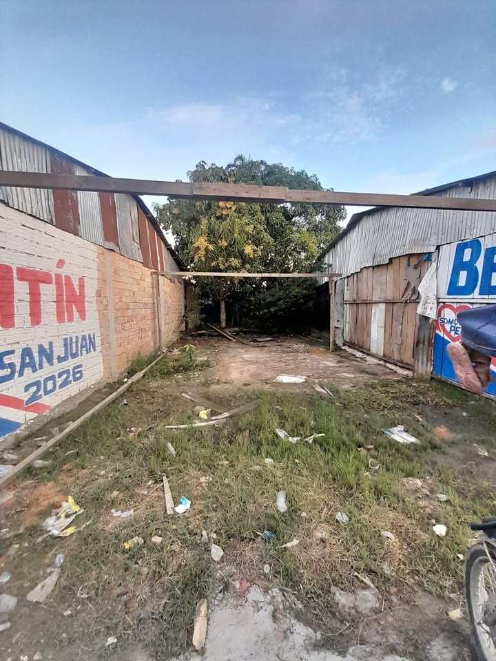
Ad AuguStar Seguros Perú
S/ 25,000 · Iquitos, LO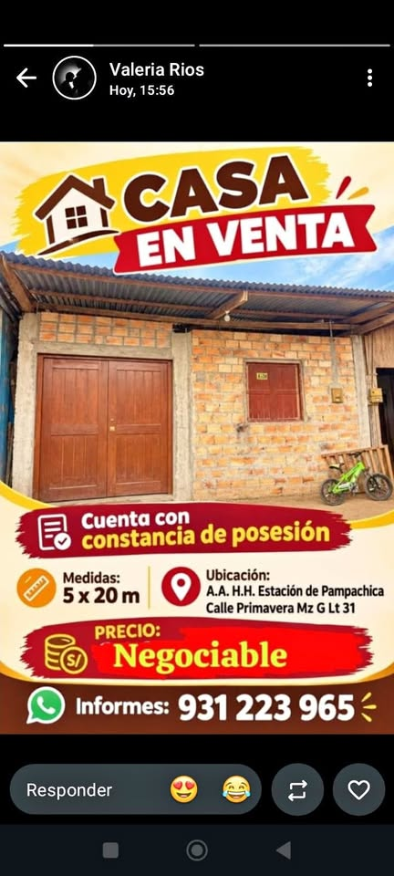
Por el Bungalows de pampachica
S/ 25,000 · Iquitos, LO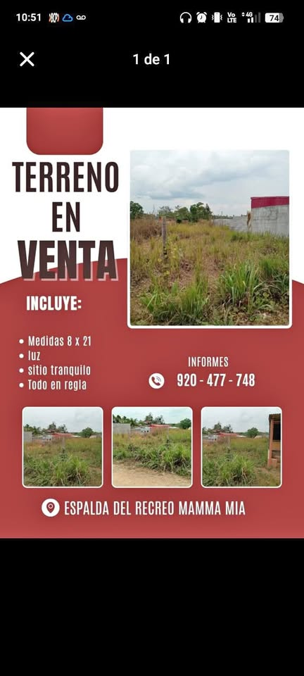
Terreno en venta, todo en regla, precio negociable
S/ 30,000 · Yurimaguas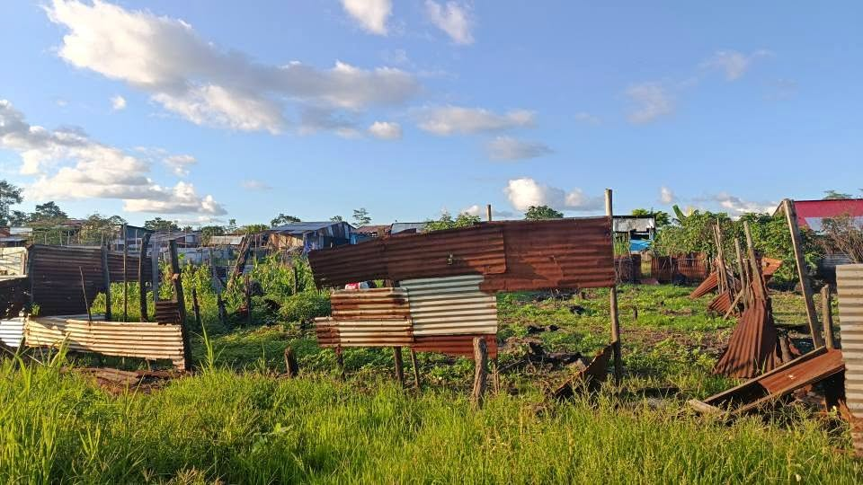
Vendo terreno (Leer descripción)
S/ 7,000 · Belén, LO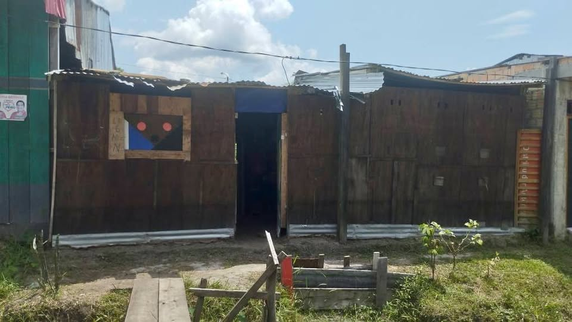
Terreno
S/ 13,000 · 180 m² · Iquitos, LO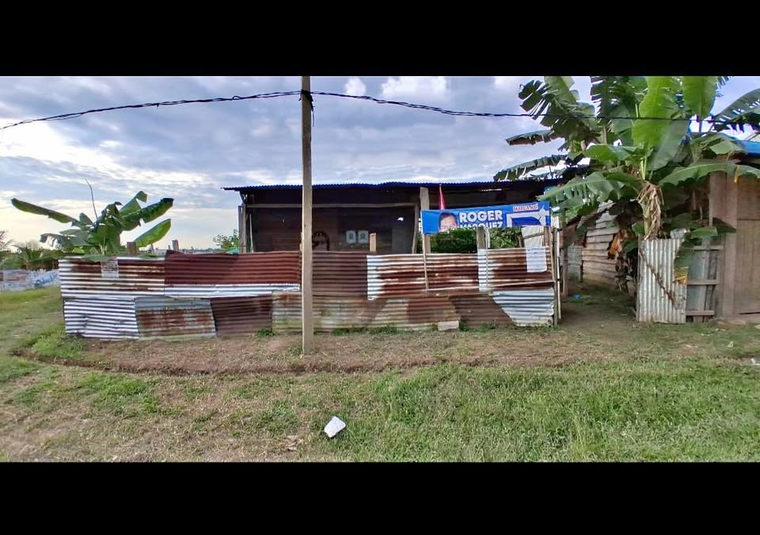
Terreno en El Encanto del Río Itaya — Con instalaciones completas
S/ 30,000 · 360 m² · Iquitos, LO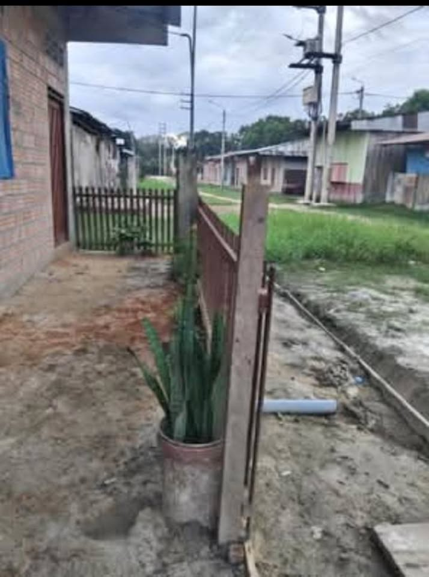
SE VENDE TERRENO
S/ 10,000 · San Juan Bautista, LO 🏡 ¡TERRENO EN VENTA EN YURIMAGUAS! 🏡 📍 Ubicación: Barrio Fundo Don Teo – La Campiña, Yu
🏡 ¡TERRENO EN VENTA EN YURIMAGUAS! 🏡 📍 Ubicación: Barrio Fundo Don Teo – La Campiña, Yu
S/ 42,000 · 192 m² · Yurimaguas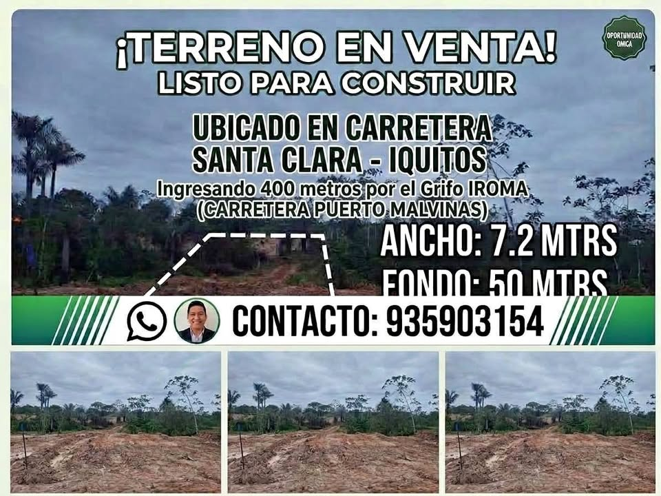
Venta Terreno listo para contruir
S/ 3,000 · Belén, LO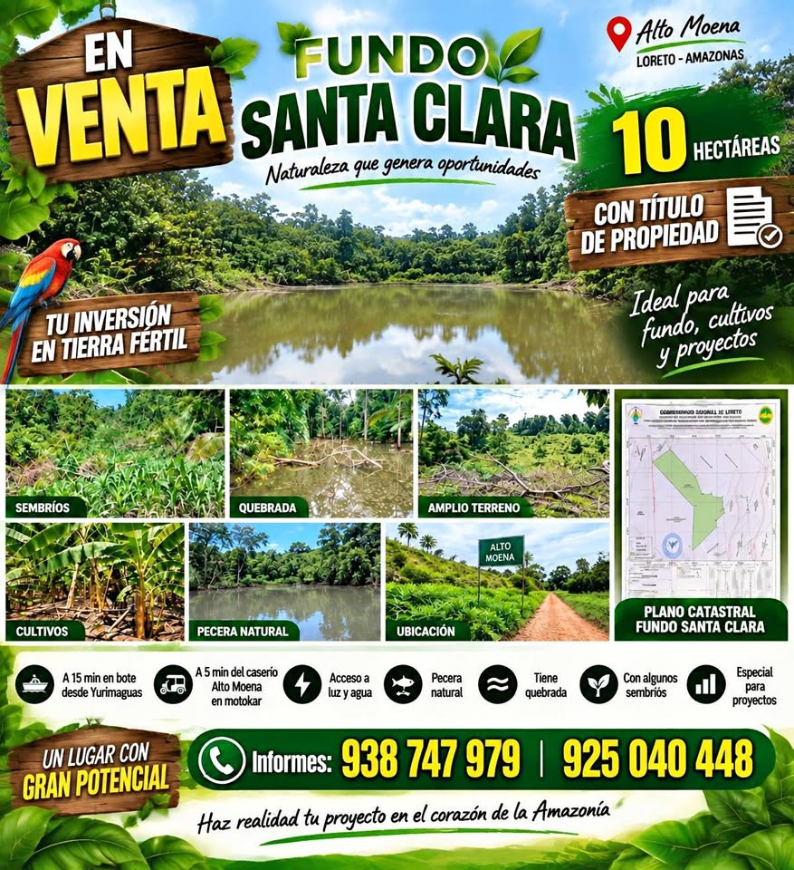
Terreno en Venta - 10 Hectáreas a 20 Min. de Yurimaguas.
S/ 80,000 · 10 ha · Yurimaguas Terreno con título
Terreno con título
S/ 6,000 · 1 ha · Iquitos, LO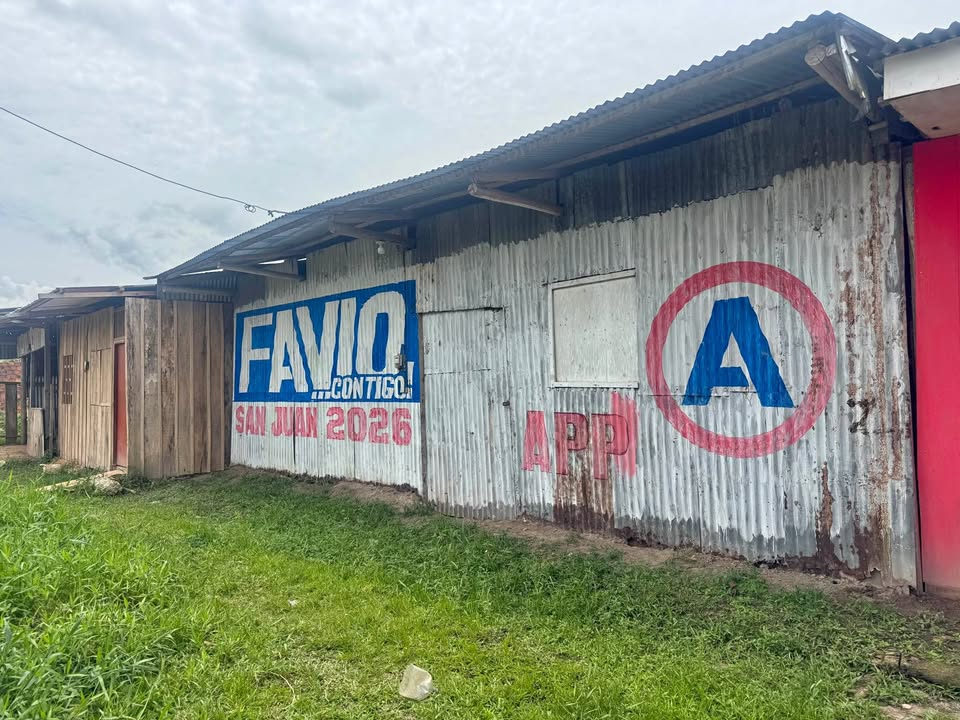
Vendo casa terreno
S/ 20,000 · Iquitos, LO Terreno
Terreno
S/ 500,000 · 3,000 m² · Yurimaguas Terreno en venta
Terreno en venta
S/ 35,000 · 400 m² · Yurimaguas TERRENO EN VENTA 📌
TERRENO EN VENTA 📌
S/ 20,000 · Yurimaguas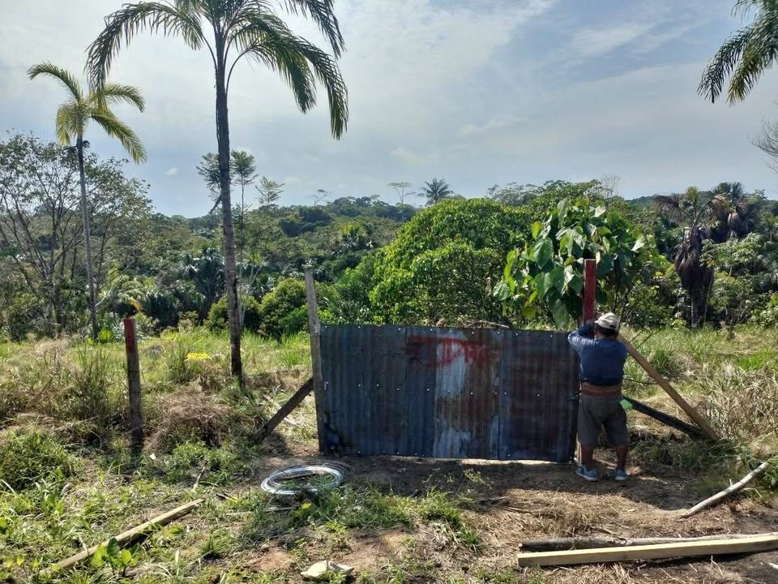
Vendo hermoso terreno en caserío Picuro Yacu
S/ 111,111 · Iquitos, LO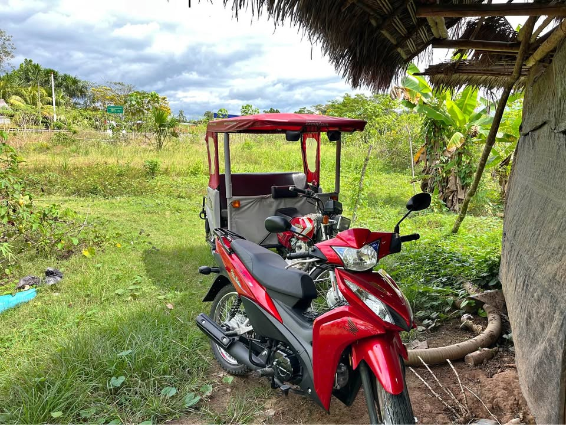
Vendo Terreno para proyecto
S/ 42,000 · 136 m² · Yurimaguas Venta De lotes de terreno
Venta De lotes de terreno
S/ 15,000 · Yurimaguas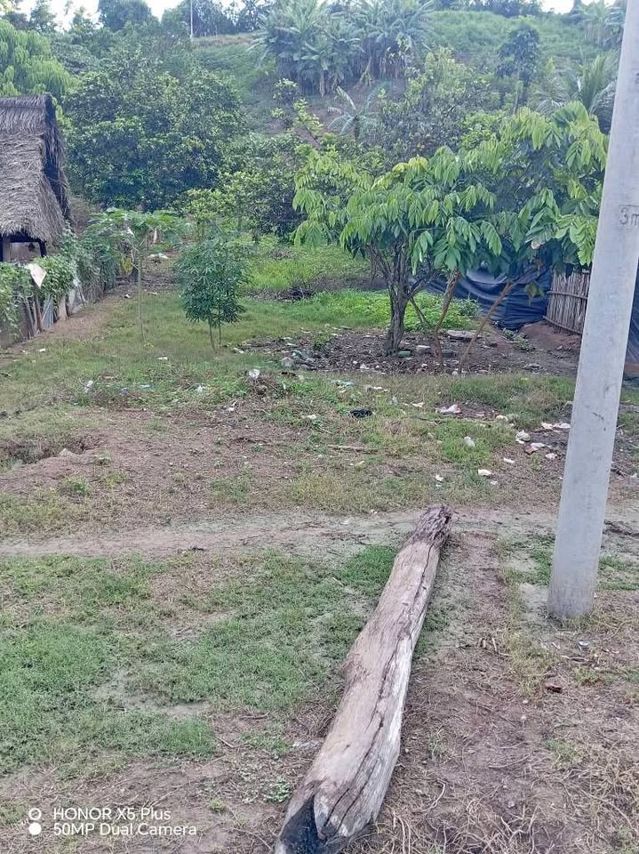
Se vende este terreno mide 10 x 30 con título de propiedad
S/ 18,000 · 300 m² · Pampa Hermosa- Sin fotoLote 8*17
S/ 45,000 · 136 m² · Yurimaguas - Sin fotoFundo 10 Hectareas
S/ 148,000 · 10 ha · Yurimaguas - Sin fotoVenta Terreno de 3 Hectárea
S/ 14,500 · 3 ha · Yurimaguas - Sin fotoRemata 25 hectáreas
S/ 78,000 · 25 ha · Yurimaguas - Sin fotoTerreno agricola en produccion, 3 hectareas
S/ 20,000 · 3 ha · Yurimaguas - Sin fotoUn terreno en yurimaguas de 45 hectáreas llamár [dato oculto]
S/ 60,000 · 45 ha · Yurimaguas - Sin foto12 HECTAREAS SAN PEDRO DEL ZAPOTE (YURIMAGUAS)
S/ 81,900 · 12 ha · Yurimaguas - Sin fotoVENDO 43 HECTÁREAS DE TERRENO RURAL
S/ 860,000 · 43 ha · Yurimaguas - Sin fotoGran Oportunidad para vivir e invertir .
S/ 25,000 · San Juan Bautista, LO - Sin fotoOCASIÓN EN VENTA LOTE DE TERRENO CON TÍTULO DE PROPIEDAD CERCA AL PUENTE PARANAPURA EN YUR
S/ 11,500 · Yurimaguas - Sin fotoTerreno con título de propiedad
S/ 20,000 · 160 m² · Yurimaguas - Sin fotoSe vende terreno al frente de nanay
S/ 60,000 · 153 m² · Iquitos, LO - Sin fotoVendo mi terreno 8×8 en el pifuayal sona centro en yurimaguas
S/ 30,000 · 64 m² · Yurimaguas - Sin fotoSe Vende Terreno
S/ 8,000 · Iquitos, LO - Sin fotoSE VENDE TERRENO
S/ 8,000 · Iquitos, LO - Sin fotoTERRENO ESQUINA BARRIO SAN JUAN - YURIMAGUAS
S/ 84,200 · 144 m² · San Juan (Yurimaguas) - Sin fotoTerreno listo para costruir.
S/ 3,000 · Belén, LO - Sin fotoRemato 57 HECTÁREAS DE TERRENO AGRÍCOLA
S/ 80,000 · 57 ha · Yurimaguas
Búsquedas relacionadas
Preguntas frecuentes
¿Cómo verifico en SUNARP un terreno en Loreto?
Pide al vendedor el número de partida registral y consúltalo gratis en Conoce Aquí de SUNARP. Luego solicita la copia literal o el certificado registral para ver quién es el dueño y si hay cargas o gravámenes. Más pasos en nuestra guía Compra segura.
¿Los datos de los anuncios están verificados?
No. Precio, tamaño, ubicación y situación legal los escribe cada vendedor. CompraTerrenos.pe no los verifica: confirma todo antes de pagar.
¿Qué diferencia hay entre posesión y propiedad?
Una constancia o certificado de posesión no es un título de propiedad inscrito. Para ser propietario frente a terceros, el título debe estar inscrito en Registros Públicos. Ver Compra segura.
¿Puedo comprar desde el extranjero?
Sí, en general mediante un poder por escritura pública otorgado en el consulado. Revisa Comprar desde el extranjero (información general, no es asesoría legal).
Datos de anuncios públicos actualizados el 9 de octubre de 2026. La información la publica cada vendedor; CompraTerrenos.pe no la verifica.